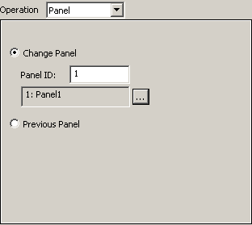

|
|
|
|
|
|
|
|
Use the dialog to set up change panel operations.

|
Property |
Description |
|
Change Panel |
Displays a specified panel. You can either enter the panel ID number or click the ellipsis to find and select the panel you want. |
|
Previous Panel |
Returns to the last panel. |

The panel operation is displayed as the last operation in the operation list. You cannot use the Up arrow  or Down arrow
or Down arrow  to move this operation.
to move this operation.
You can set either a panel operation or a system operation in the part. Only one of those operations can be used in the part at one time.
The Previous Panel operation saves the 31 most recent panel changes.